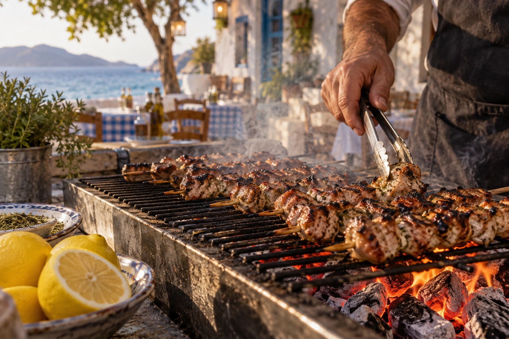
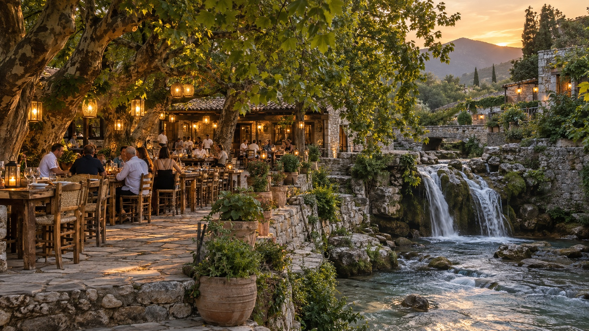
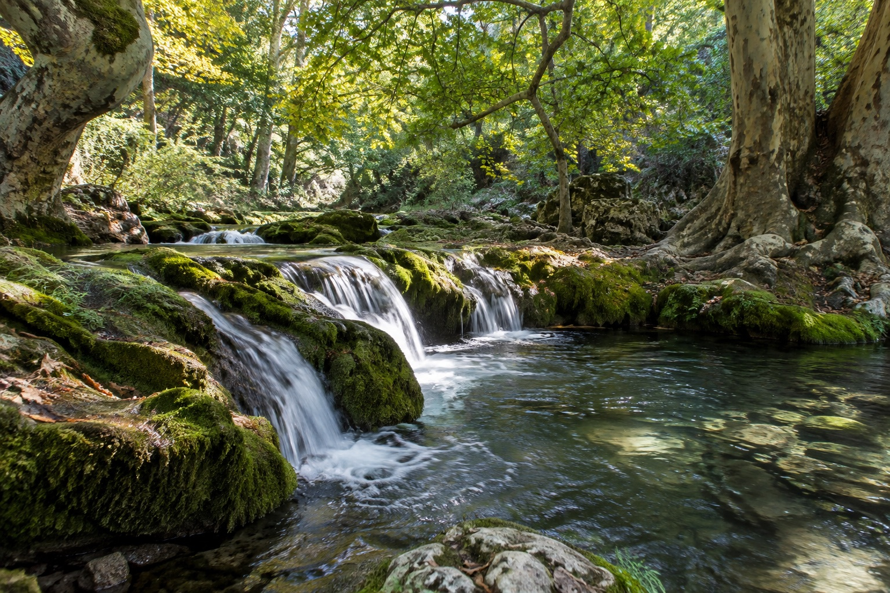
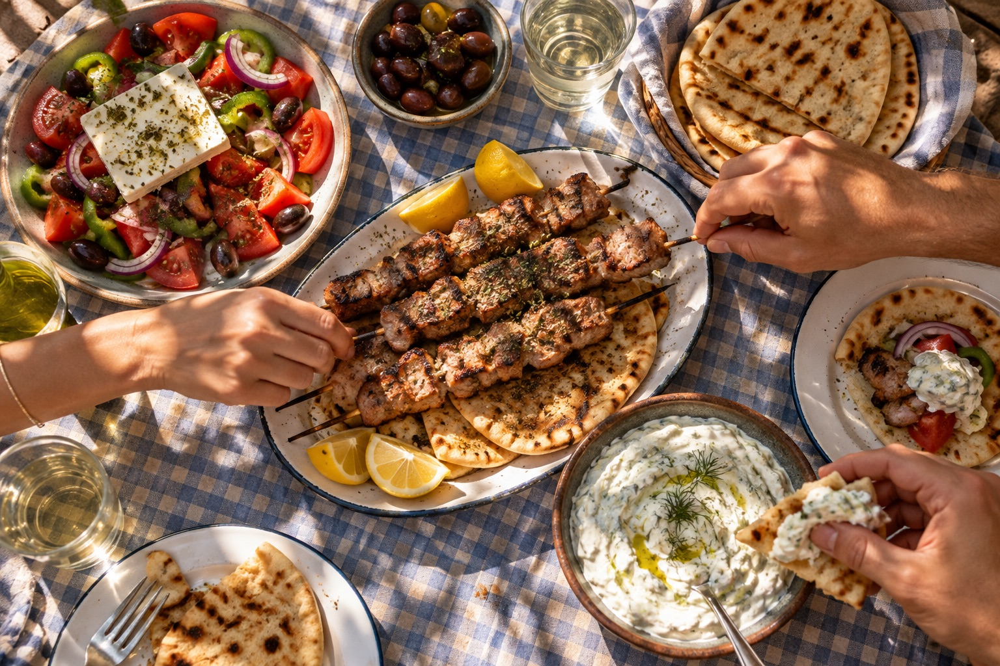
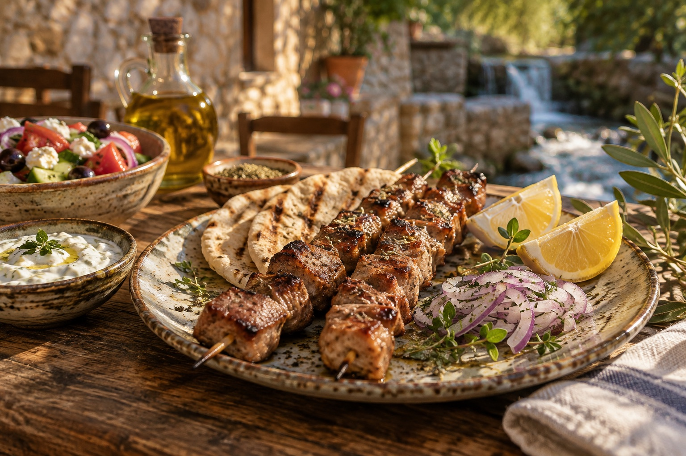
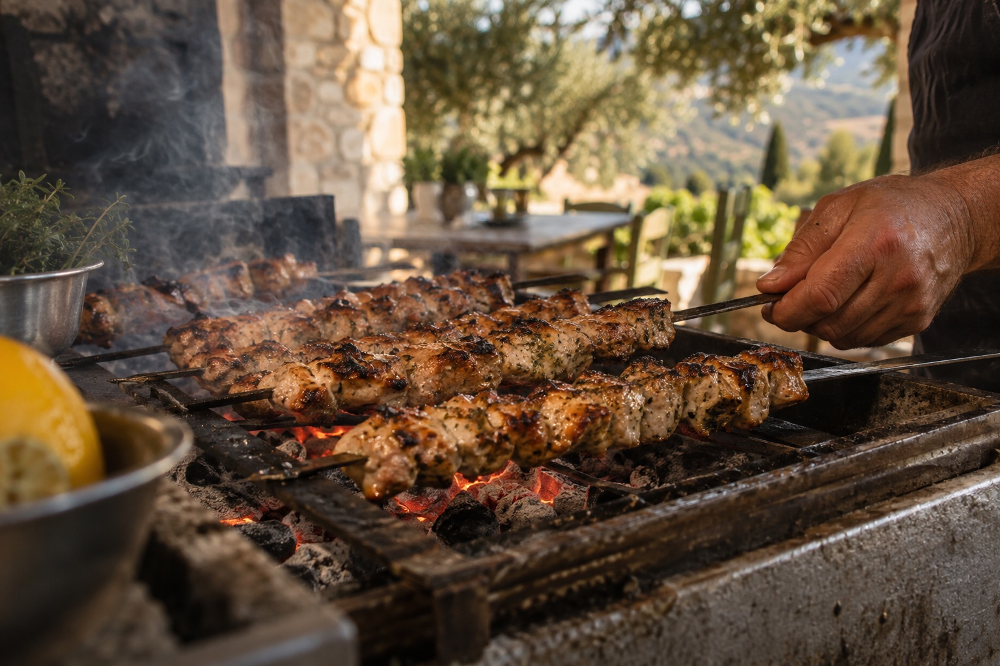
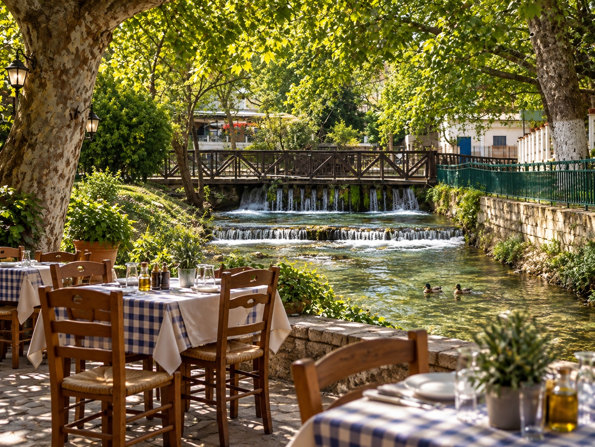
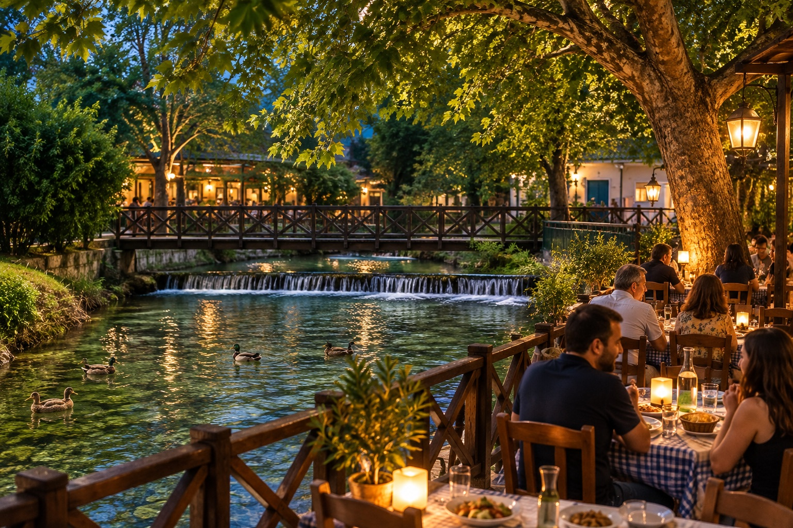

I / FIRE
Η φωτιά έχει τον δικό της τρόπο.
Σουβλάκια πάνω στα κάρβουνα. Η μυρωδιά που σου ανοίγει την όρεξη πριν καθίσεις.

ΑΓΙΟΣ ΙΩΑΝΝΗΣ · ΣΕΡΡΕΣ
Ελάτε για τη γεύση. Μείνετε για τη στιγμή.
ΑνακαλύψτεΕικαστικές εικόνες · πραγματικές φωτογραφίες θα προστεθούν
ΚΑΛΩΣ ΗΡΘΑΤΕ
Στον Άγιο Ιωάννη Σερρών, το νερό και τα πλατάνια δίνουν τον ρυθμό. Η φωτιά του ψησίματος φέρνει την παρέα γύρω από το τραπέζι. Εδώ, η απόλαυση δεν βιάζεται.

Σουβλάκια πάνω στα κάρβουνα. Η μυρωδιά που σου ανοίγει την όρεξη πριν καθίσεις.

Μια βόλτα κοντά στους μικρούς καταρράκτες, σκιά κάτω από τα πλατάνια και χρόνος για κουβέντα.
Το καλύτερο τραπέζι είναι εκείνο που δεν θέλεις να τελειώσει.
02 / ΟΙ ΓΕΥΣΕΙΣ
Καπνός από τα κάρβουνα, λεμόνι στο τραπέζι, πιάτα για τη μέση. Η ελληνική ταβέρνα όπως πρέπει να τη νιώθεις.



Η πραγματική κάρτα και οι τιμές θα προστεθούν όταν δοθούν από την ταβέρνα.

03 / Ο ΤΟΠΟΣ
Ο Άγιος Ιωάννης είναι γνωστός για τα τρεχούμενα νερά, τους μικρούς καταρράκτες και την πράσινη σκιά του. Μια μικρή απόδραση που γίνεται μεγάλη ανάμνηση.
Δείτε την περιοχή στον χάρτη04 / ΕΙΚΟΝΕΣ
Είκοσι κινηματογραφικές εικόνες για την ατμόσφαιρα, τις γεύσεις και τον τόπο.
Οι εικόνες είναι δημιουργημένες εικαστικές προσεγγίσεις και δεν απεικονίζουν πιστά τον πραγματικό χώρο ή τα πιάτα.

05 / Η ΠΡΟΣΚΛΗΣΗ
Στον Άγιο Ιωάννη Σερρών, ανάμεσα στη φωτιά και το νερό. Ελάτε να μοιραστούμε μια όμορφη στιγμή.
Δείτε την περιοχήΗ ακριβής διεύθυνση, το τηλέφωνο και οι ώρες λειτουργίας θα προστεθούν σύντομα.